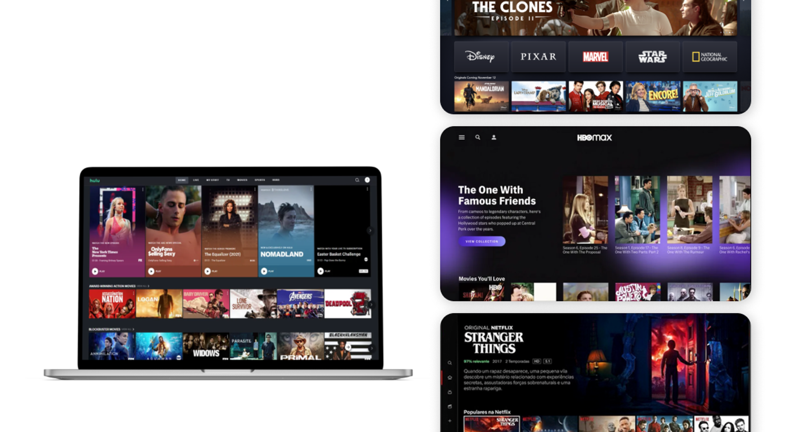

The Process
1. Research
2. Synthesis
3. Ideation
4. Design
We started by exploring several streaming applications — such as Netflix and HBO — to have a better understanding of how this apps work and its features. From there we also note some points that should be considered to add to this app.
1. Research
While conducting a research about streaming apps, several common elements and considerations arise. Such as (1) Video Player Interface; (2) Personalization and Recommendations; (3) Cross-Platform Consistency; (4) Accessibility; (5) Social Interaction and Community Features.
Here the goal is to create a user-centric and enjoyable experience that keeps users engaged and satisfied, while providing easy access to a vast library of content.
2. Synthesis
3. Ideation
Wireframes
Then we proceeded to create an initial version of the platform screens. This gives a better understand of the project requirements, user needs, and business goals specific to the streaming platform. Gathers insights on the app's features, content organization, and target audience.
Style Guide
4. Design